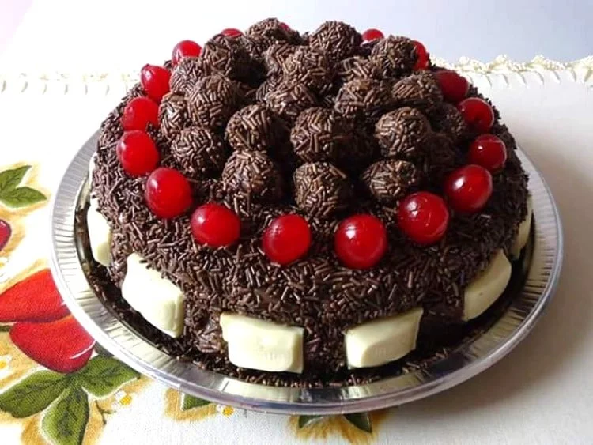

Bolo Nega Maluca
INGREDIENTES:
3 ovos;
3/4 de xícara de chá de óleo;
1 xícara de chá de água fervente;
2 xícaras de chá de farinha de trigo;
1 e 1/2 xícara de chá de açúcar;
1 xícara de chá de achocolatado em pó;
1 colher de sopa de fermento em pó.
COBERTURA:
1/2 xícara de chá de leite;
1 colher (sopa) de manteiga ou margarina;
3 colheres de açúcar;
6 colheres de chocolate em pó;
1 colher de sopa (rasa) de farinha de trigo.
MODO DE PREPARO DA MASSA:
Coloque todos os ingredientes da massa no liquidificador e bata até obter uma massa homogênea e sem pelotas.
Despeje a massa em uma assadeira untada e enfarinhada ou use o truque do papel toalha e leve ao forno preaquecido a 180ºC entre 20 a 25 minutos.
Retire do forno e deixe amornar.
MODO DE PREPARO DO RECHEIO:
Coloque todos os ingredientes em uma panelinha e leve ao fogo alto mexendo até levantar fervura.
Após levantar fervura, abaixe o fogo e continue mexendo por mais 5 minutos.
Despeje sobre o bolo e espere esfriar para cortar.